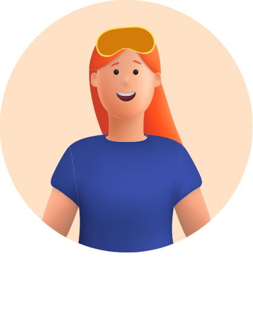

-
אני טס/ה
יש לך לחץ באוזניים בזמן טיסות? את/ה לא לבד! תופעה זו נפוצה בזמן טיסות, ויכולה להשפיע משמעותית על חווית הטיסה שלך. נמליץ לך ללמוד איך להשתמש באירדוק, שיפחית לך את הלחץ באוזניים בטיסות.
- 
- 
-
לחץ באוזניים בטיסות - למה זה קורה לנו?
תחושת לחץ באוזניים במהלך טיסה נוצרת בעיקר בהמראה ובנחיתה, כתוצאה מהפרש הלחצים בין האוויר הסביבתי לאוויר הכלוא בחלל האוזן התיכונה.
-
פתרון חדש לכאבי אוזניים בטיסות: מכשיר האירדוק
אפשר לסובב את המכשיר וללחוץ על הנקודות השונות כדי להכיר את מבנה האירדוק